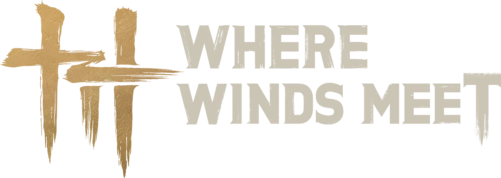
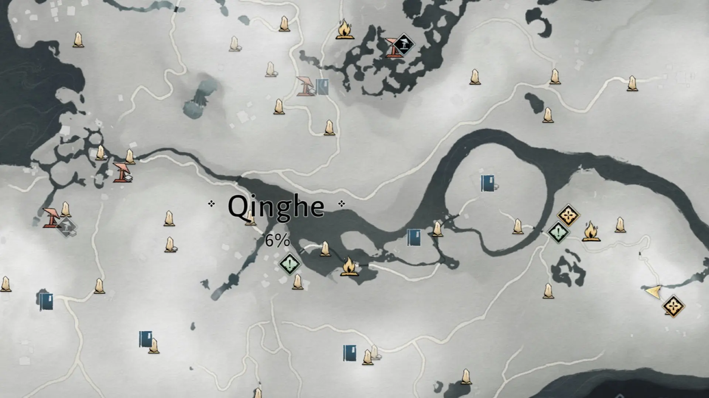

Boss Fights. Sword Mastery. Aerial Combat.
An Entire Open World — Zero Cost.
✓ Free Official Installer · ✓ No Pay-to-Win · ✓ Secure Download
Fluid combat, breathtaking movement, a living world awaiting your legend.
Transcend mortal limits. Master forgotten techniques that defy heaven and earth.
Harness the Ripple Step — a technique so refined that your feet barely graze the surface.
The Swallow's Flight technique lets you soar across ancient city skylines.
Unlock forbidden sword styles passed through dynasties, reborn through you.
Rise above the mortal realm. Chain strikes in mid-air and deliver devastating blows.
Walk as a physician or an architect who reshapes the very cities of the empire.
Perceive enemies through walls and become one with the living world around you.
The developers committed to this from day one. Here's exactly what "free" means.
The developers officially guaranteed it: no purchasable item ever gives a combat advantage. Your legend is written by skill — never by wallet size.
Officially GuaranteedThe in-game shop sells outfits, visual effects, and cosmetic items only. Every stat, skill, weapon, and story chapter is unlocked through gameplay.
Cosmetics · Outfits · EffectsEvery version — v1.1 through v1.4 "Home Afar" — added full regions, quests, and bosses at zero cost. New content keeps coming, always free.
v1.4 Available NowReal reviews from the Steam community.
"Pretty great for a free game. Great storytelling, amazing open world experience. The most noteworthy part — the gacha system is only for cosmetics, not for game content. That's rare in free games."
22 people found this helpful"Absolutely gorgeous open world with beautiful ambient music. Tons of NPCs and animals to interact with. This game's open world is what Assassin's Creed wishes it could be. Best of all — it's free."
15 people found this helpful"I assumed it would be a good-looking grindfest. It distracted me so much I was already level 65 before I even started the main story. I haven't thought about putting something on my second screen since. I'm completely hooked."
42 people found this helpfulFrom northern steppes to southern seas — every region holds ancient secrets.

Click the Download button. The official installer is lightweight, fast, and completely free.
Launch the installer and follow the guided steps. The game installs to your chosen drive.
Your legend begins the moment you load in. Ancient China awaits — and the winds are calling.
One free download. One legendary journey.
Ancient China has never felt this alive.
Free to Download · Official Installer · Windows 10/11 · Secure & Verified
Yes. The game is available as a free download. The official installer contains the full base game.
Absolutely. The installer is digitally signed, virus-free, and served from official servers.
Where Winds Meet runs on Windows PC only (Windows 10 and Windows 11, 64-bit).
Most modern mid-range PCs from the last 4 years will run it comfortably at high settings.
Absolutely not. The gacha system only applies to cosmetic items like outfits — it has zero impact on gameplay, combat power, or story progression. Everything that matters is earned through playing.
Yes. The full game — every region, every quest, every boss, every story chapter — is completely free. No paywall, no premium tier required to enjoy the full experience.